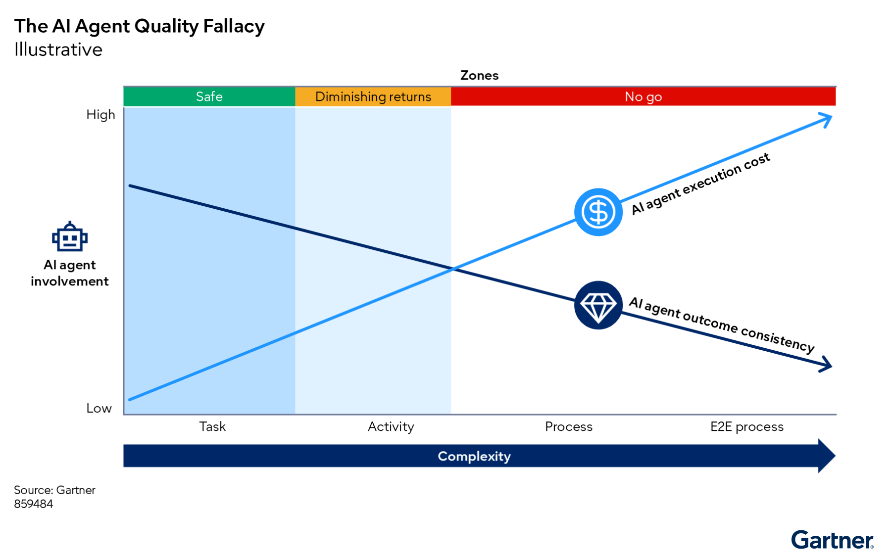

정확도 요구가 높은 프로세스일수록 AI 에이전트의 역할을 좁혀야 한다. 핵심은 프로세스 전체를 맡길지, 일부 태스크만 맡길지 구분하는 일이다.
핵심 요약
AI 에이전트는 복잡한 업무 프로세스 전체를 오케스트레이션orchestration — 여러 작업, 도구, 사람을 순서에 맞게 묶어 실행하는 운영 제어 방식.하는 용도로 쓰지 말아야 한다. 단일 태스크에서는 정답률이 약 80%로 추정되지만, 실제 현장은 60%에 가까울 수 있다. 오류는 여러 단계를 거치며 누적된다. 네 단계만 동시에 돌아가도 전체 성공률은 50% 밑으로 떨어질 수 있다.

크게 보기As complexity increases from tasks to end-to-end processes, AI agent execution costs rise while outcome consistency declines. Agent use is safest for individual tasks, yields diminishing returns for activities, and becomes unsuitable for complex processes.
As complexity increases from tasks to end-to-end processes, AI agent execution costs rise while outcome consistency declines. Agent use is safest for individual tasks, yields diminishing returns for activities, and becomes unsuitable for complex processes.
닫기문제 맥락
조직들은 운영 현대화와 자율 운영을 추진하면서 AI 에이전트가 어디까지 맡을 수 있는지 판단에 어려움을 겪는다. 벤더들은 '프로세스'를 말하지만 실제로는 '태스크'를 가리키는 경우가 많다. 오케스트레이션 범위도 에이전트 내부인지, 에이전트 사이인지, 전체 시스템인지 제각각이다. 이 차이를 먼저 가려야 투자 판단이 선다.
영향
복잡한 비즈니스 프로세스를 자동화하려는 조직은 적응형 AI 에이전트와 규칙 기반 도구 중 무엇이 프로세스를 통제할지 결정해야 한다. 2027년 말까지 에이전트형 프로젝트의 40%가 중단될 것으로 예상된다. 업무 결과가 규제 준수, 품질, 평판에 미치는 영향이 클수록 에이전트 단독 오케스트레이션의 위험이 커진다. 비용도 늘어난다. 추론이 많이 필요할수록 품질은 흔들리고 실행 비용은 크게 오른다.
시사점
AI 에이전트의 강점은 태스크 수준의 문제 해결이다. 변화하는 조건에 맞추고, 예외를 처리하고, 비정형 데이터를 다루는 데는 적합하다. 반면 정확성, 일관성, 반복 가능성이 필요한 프로세스 전체에는 맞지 않다. 설계 단계나 운영 중 판단, 업무 라우팅에는 에이전트를 쓰고, 실제 실행은 결정론적 기법으로 나눠야 한다.
프로세스 복잡성은 지식노동의 난도와 다르다. 의료 보고서를 해석하거나 법적 책임을 따지는 일이 어렵다고 해서, 그 프로세스가 곧바로 에이전트 오케스트레이션에 맞는 것은 아니다. 프로세스 복잡성은 단계 수, 단계 간 의존성, 입력 변동성, 참여자와 조정 방식, 결과 변동성, 처리 건수, 시스템 상호운용성으로 커진다. 이 요소가 얽힐수록 에이전트 품질 저하는 빨라진다.
조직은 사람 중심 방법론과 AI를 함께 써서 보이는 병목과 보이지 않는 병목을 같이 찾아야 한다. Lean, Six Sigma, BPM, 프로세스 인텔리전스 같은 방법으로 현재 흐름을 풀어 본 뒤, 에이전트는 태스크 단위에 제한해야 한다. 프로세스 전체를 맡기기보다 하위 요소 오케스트레이션이나 업무 라우팅 엔진으로 쓰는 편이 안전하다.